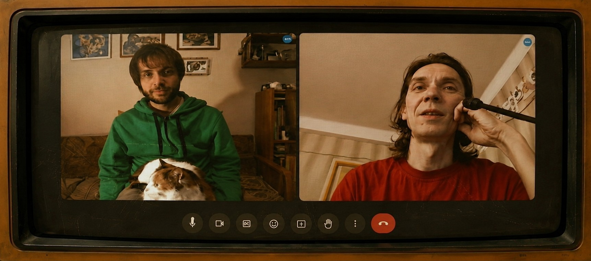
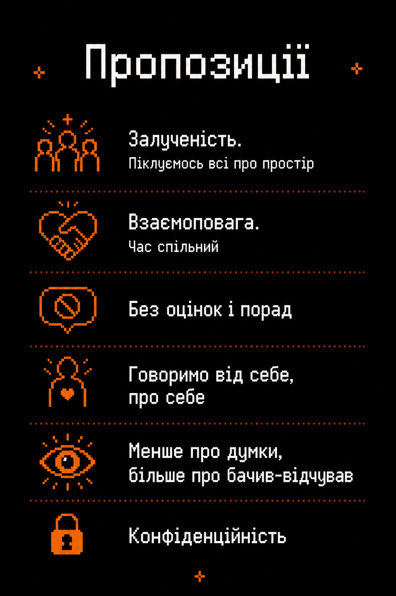

ЗАРАЗ: ONLINE
ЗАХОДЬ НА ЕМПАТІЮ
Можна підключатися не з початку й не до кінця, камера — за бажанням

📋 ЩО ЦЕ
Коли навколо багато оцінок, порад і швидких висновків, емпатія стає не абстрактною красивою ідеєю, а дуже практичною потребою.
Емпатійне кафе — це структурована онлайн-зустріч для спілкування, де слухаємо один одного й тренуємо безоцінкове слухання за принципами Ненасильницького спілкування / NVC Розенберга.
Фасилітатори допомагатимуть тримати цю рамку і швидко реагуватимуть на осуд, токсичність або спроби перетворити простір на дискусійний клуб.
⚠️ ЧИМ ЦЕ НЕ Є
Цей простір створений для теплих і підтримних розмов, але він НЕ є терапевтичною групою.
Якщо ви переживаєте сильний біль, травму чи кризовий стан, дбайливішим рішенням буде не відкрита онлайн-розмова з незнайомими людьми, а звернення до професійної психологічної допомоги!
⌚ ЯК ПРОХОДИТЬ
Зустріч триває 2 години у груповому дзвінку Google Meet:
🌱 ЧОМУ МИ ЗБИРАЄМОСЯ

ЕМПАТІЯ БЕЗ ПОРАД І ОЦІНОК
- Тут не змагаємося, чий досвід правильніший
- Тут не вчимо одне одного жити
- Тут не рятуємо
- Тут не пояснюємо, що людина «насправді мала на увазі»
НАТОМІСТЬ СЛУХАЄМО:
про досвід, про відчуття, де є напруга, а де навпаки — живе і справжнє, що важливо та які потреби за цим стоять.
Інші учасники/-ці — тільки з дозволу людини — можуть надати емпатичний відгук: не аналіз, а спробу повернути почуте через почуття та потреби, які вони помітили.
😺 ЕМПАТІЙНЕ СЛУХАННЯ
Щоб простір залишався безпечним і емпатійним, ми звертаємо увагу на те, як ми відповідаємо одне одному. Один і той самий намір можна передати по-різному:
🎁 ЧИМ ДІЛИТИСЯ (НАПРИКЛАД)
Оберіть слот, щоб дізнатися деталі:
РАДІСТЬ & ЖИВЕ
Точно можна приходити з тим, що у вас живе зараз: радістю, полегшенням, ніжністю, вдячністю, закоханістю, відчуттям краси, бажанням поділитися тим, що вийшло.
З будь-чим важким, заплутаним, незручним, дрібним, соромітним, невисловленим. Коли фонове відчуття “зі мною щось не так”, складність попросити про підтримку, неможливість сказати “ні”, втома весь час пояснювати себе іншим.
Тут простір прийняття квірного, кінк, поліаморного, немоногамного досвіду — і водночас дуже звичайних людських інтимних переживань, знайомих багатьом. Про сексуальність, згоду, турботу, ревнощі, прив'язаність, чесність, свободу, конфлікти, відновлення після болісного досвіду, сором говорити про секс, кінк чи фантазії.
Можна приходити з темами про близькість, довіру, дистанцію, з досвідом моногамних і немоногамних стосунків, труднощами у поліаморних конфігураціях, переживаннями через NRE (нову енергію стосунків), болем від ієрархій або нечітких ролей, складністю витримувати процеси партнерів/-ок, страхом осуду за свою ідентичність.
Навіть із тим, що “ніби не така вже й проблема”, але чомусь не відпускає. Можна приходити і з тим, що наче “дрібниця”: незручна розмова, дивний осад після побачення, повідомлення без відповіді, накопичене роздратування, внутрішній ступор.
Точно можна приходити з тим, що у вас живе зараз: радістю, полегшенням, ніжністю, вдячністю, закоханістю, відчуттям краси, бажанням поділитися тим, що вийшло.
БЛИЗЬКІСТЬ & СТОСУНКИ
СЕКС & БАЖАННЯ
ВАЖКЕ & СКЛАДНЕ
ДРІБНИЦІ ЖИТТЯ
РАДІСТЬ & ЖИВЕ
🤩 ПРИЄДНУЙСЯ!
Запрошуємо побути серед людей, де не треба стискатися, захищатися чи доводити право на свій досвід. Не потрібно бути “достатньо досвідченими”, “достатньо правильними” чи приходити з ідеально сформульованим запитом.
+